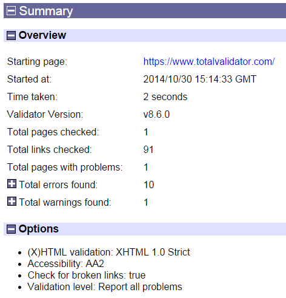
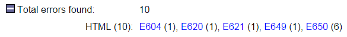
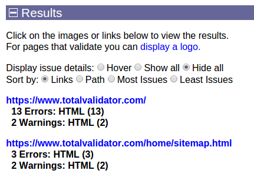
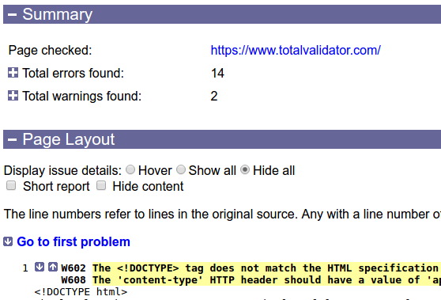
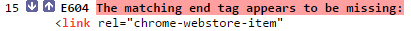
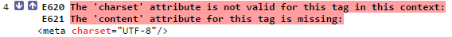
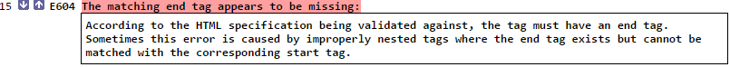
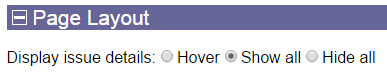

Introduction
Total Validator reports its results as standard web pages that can be read by a standard browser. Two types of page are used; a summary page and a results page.
The summary page provides a summary of the tests performed, together with links to results pages for each page on your website that was found to contain problems. Note that pages that do not have any problems are not listed unless you use the show success option.
Each results page provides a list of problems found for the particular web page or style sheet that was tested.
The summary page is stored in a file called 'TotalValidator.html' and the results pages are stored with this in a sub-folder called 'Results'. These are normally overwritten each time you run the tool so that you don't run out of disk space.
The typical location of these files depending on your operating system is as follows:
- Windows 2000/XP:
My Documents\TotalValidatorTool - Windows Vista/7/8/10:
<drive>:\Users\<your_login_name>\Documents\TotalValidatorTool - Linux:
<user_home>/Documents/totalvalidatortool, or the folder you installed the tool into - OS X:
<user_home>/Documents/TotalvalidatorTool
The location of this 'Documents' folder is also displayed in the 'About' menu.
You can change the name and location of these files using the save results to and unique report options on the Results tab of the Pro tool.
 top
topSummary page
A the top of the summary page is the name of, and a link to, the starting page you supplied. Then there is a summary of the report including the version of the tool used, the options selected, and number of problems found:

Use the '+' and '-' buttons to close or expand each section. For example, you can display more information about the total errors found, including links to the reference documentation:

Underneath this is a list of all the pages tested together with a summary of the problems for each:

Each URL displayed is a link to the detailed results for that page (described in the next section along with 'Display issue details').
You can also sort the list of results by 'Links' (the original order in which the pages were validated), by 'Path' (an alphabetic list of URLs), or by the pages with the 'Most' or 'Least' number of issues.
Results page
At the top of the page is the name of, and a link to, the page that was tested. There then appears a summary of the report, followed by a representation of the web page tested:

Normally the representation of the web page shows each of the tags within it on a separate line, with indentation showing how the tags are nested within each other. This should make it easy to read the results even with the most poorly formatted source web page or where the layout style varies across the site. It is particularly useful when the pages are generated by a computer program, as these tend to generate the most irregular web page source.
Similarly, CSS stylesheets and statements within <style> tags are reformatted and reorganised to allow errors to be easily reported on.
To make it easier to read the report, the 'Hide content' checkbox toggles the display of text content and the 'Short report' checkbox hides everything except those lines with issues. You can set these in advance using the Hide content and Short report options.
The line numbers on the left refer to lines in the original source so you can quickly get to and amend the faulty tag or CSS statements in the original web page source.
Line numbers marked as '0' refer to tags added by the tool. These are optional tags that are implicit in the standards, but are sometimes displayed in the results as somewhere to attach errors/warnings to relating to the subsequent page.
The image below shows an example of how an error is displayed. These are highlighted and begin with an 'E' followed by a unique number for the error, then some explanatory text. Probable errors begin with a 'P' and Warnings begin with a 'W'. There are also up and down arrows next to the problem to allow you to quickly navigate to other problems on the page.

If there is more than one error associated with a tag then these are listed one after another on separate lines before the tag itself:

Note that column numbers referring to the original source are not displayed. This is deliberate as many problems apply to the whole tag. Also we've found that having column numbers often detracts from understanding the problem. Instead where possible the item in question will be highlighted in red as shown above.
By default when you hover over a problem a box will appear displaying further information about it:

Instead of hovering to display this information, you can choose to always display it or always hide it using the 'Display issue details' option at the top:

You can then click the problem text instead of hovering over it to toggle the display of this extra information.
The same option also appears on the Summary page, where it applies to all of the Results pages. In the Pro tool you can also set the default value across all of the Results pages if you prefer a specific option every time.
Spelling mistakes
Potential spelling mistakes are dealt with as shown in the image below. The word that is not recognised by the dictionary is highlighted and followed by a list of suggested replacements:
Note that the line number given refers to the first line of the content containing the spelling mistake. So if the content spans multiple lines it may not match the line with the mistake on. But it should still be simple to find the mistake in the original page.
With the Pro tool, if the spelling validator highlights a word which isn't a mistake, you can click on it to add it to your own dictionary of words so it doesn't appear in future validations. With all modern browsers, clicking on a word will cause the highlighting of the word and the suggestions to disappear wherever they appear in any page validated, and the link will be disabled to prevent double-clicking by mistake. With old versions of IE (anything earlier than IE10), when you click on a word a new page will appear with a confirmation message and you will have to use the back button to continue to add further words or to continue to view the validations results.